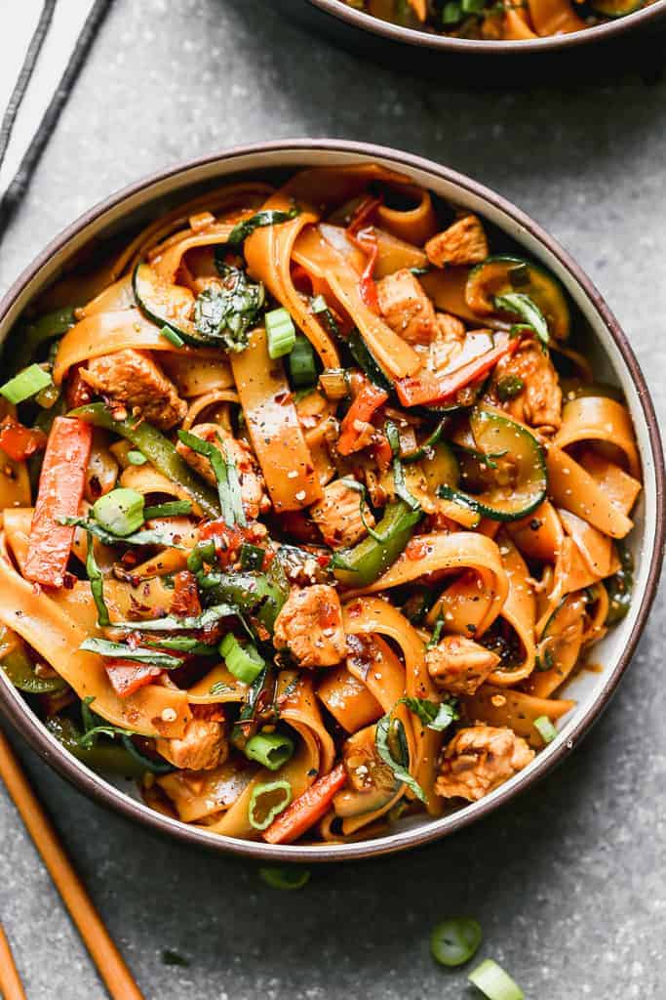

Drunken Noodles

Description
Ingredients
- Rice noodles
- Thai basil (regular or Holy Basil)
- Green onion
- Onion
- Chili
- Garlic
- Light soy
- Fish sauce
- Dark soy
- Oyster sauce
- Sugar
Steps
- Prepare noodles per packet directions.
- Mix Sauce in a small bowl.
- Heat oil in wok or large heavy based skillet over high heat.
- Add garlic and chilli and cook for 10 seconds.
- Add onion, cook for 1 minute.
- Add chicken and fish sauce, and fry until cooked, around 2 minutes.
- Add green onion, noodles and sauce and cook for 1 minute until the sauce reduces and coats the noodles.
- Remove from heat and immediately add basil, toss until just wilted, then serve immediately.
Source